Explore Hanoi
A Brief History
Hanoi became Vietnam's capital under Ly and later dynasties on the Red River delta. Temple of Literature, French colonial opera house, and Ho Chi Minh Mausoleum record Confucian examination culture, colonial urbanism, and twentieth-century independence struggles. Hoan Kiem Lake promenades and Old Quarter guild streets extend dynastic and colonial layers around the Red River.
Attractions Map
Top Sights & Activities
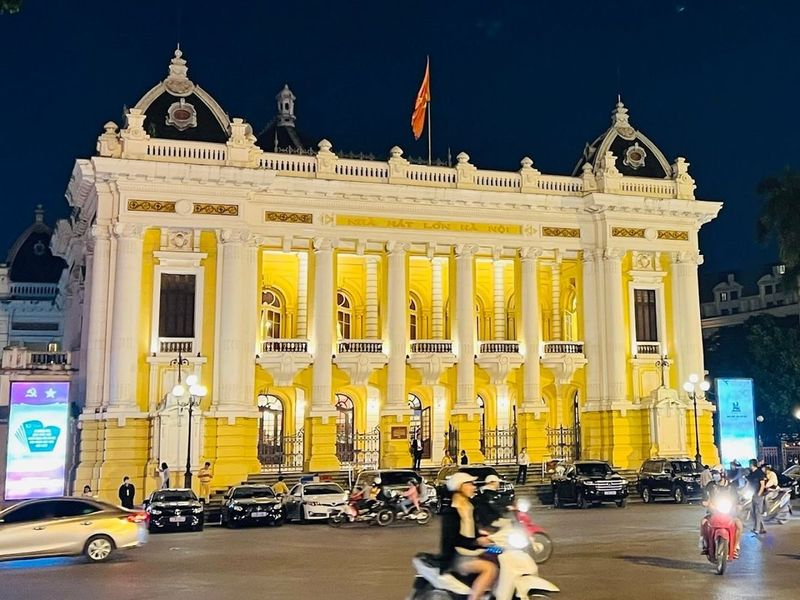
Hanoi Opera House
Hanoi Opera House, an ornate performing arts hall, is a destination in the heart of Hanoi's French Quarter. Built in 1911 with strong influences from 19th-century French architecture, it boasts ivory-toned columns, Gothic domes, and NeoClassical windows. The interior features a crystal chandelier and a T-shaped white marble staircase adorned with a red carpet.
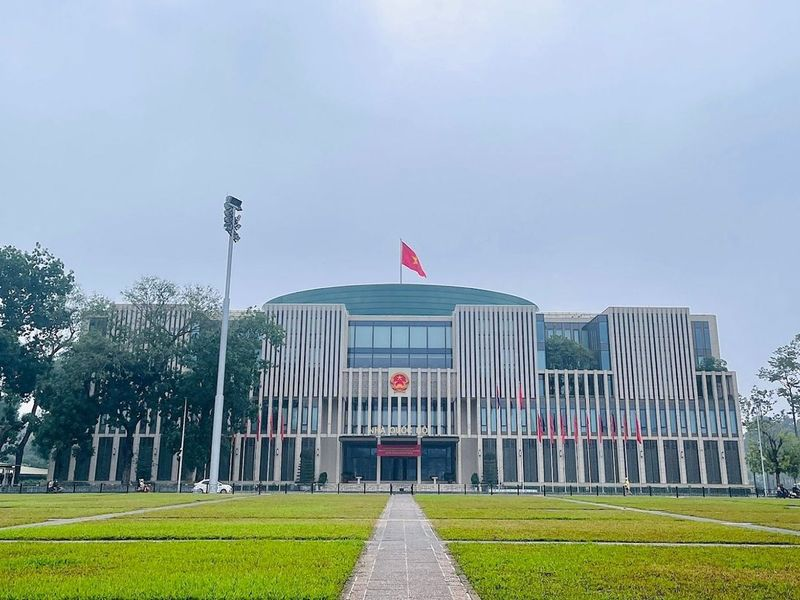
Ho Chi Minh's Mausoleum
Ho Chi Minh's Mausoleum is a significant historical site and tourist attraction in Vietnam. It holds the embalmed remains of Ho Chi Minh, the Vietnamese leader, and offers insights into his life and the country's liberation process under his leadership. Visitors are encouraged to explore Ba Dinh Square, where Vietnam's First Independence Day was celebrated, as well as other nearby attractions such as Ho Chi Minh Museum, House on Stilts, Presidential Palace, and One Pillar Pagoda.
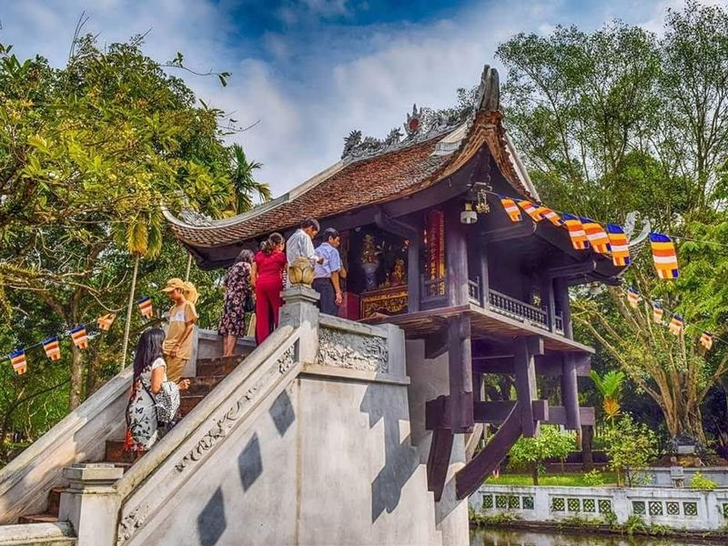
One Pillar Pagoda
One Pillar Pagoda, a reconstructed Buddhist temple dating back to 1049, is a in Hanoi. The pagoda's unique design resembles a lotus blossom and is located near the preserved body of Ho Chi Minh at Ba Dinh Square. Visitors can also explore the Museum of Ethnology to learn about Vietnam's diverse ethnic groups.
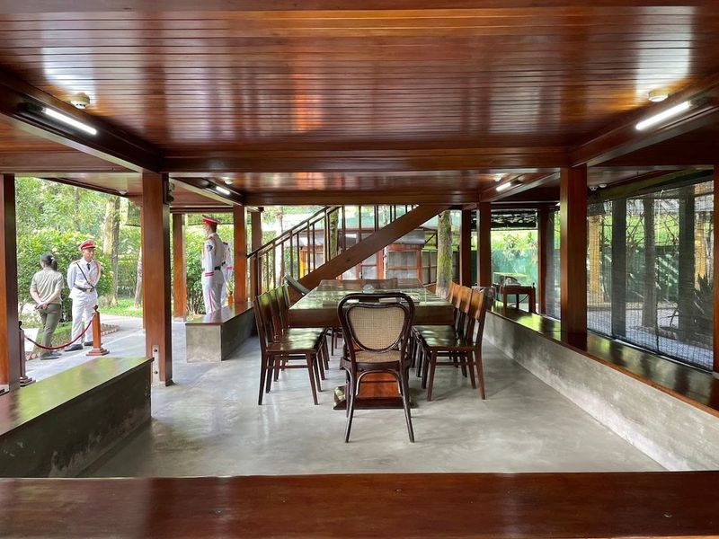
Ho Chi Minh’s Stilt House
Ho Chi Minh’s Stilt House is a simple yet captivating wooden stilt home that served as the residence for Communist leader Ho Chi Minh during the last 11 years of his life. Situated within the Presidential Palace complex, this architectural gem was inspired by the traditional houses of the Viet Bac ethnic minority. The two-story house, surrounded by lush gardens and a carp pond, has been preserved just as Ho left it in 1969.
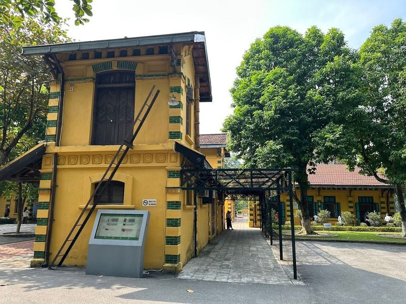
Presidential Palace
The Presidential Palace in Hanoi, a 1900s French Colonial masterpiece, serves as the official residence and workplace of Vietnam's president and vice president. Recognized as one of the world's most beautiful palaces by Architectural Digest, this neoclassical landmark was originally built as the residence for the Governor-General of Indochina. Designed by Auguste Henri Vildieu, it stands as a luxurious symbol of colonial architecture in Hanoi.
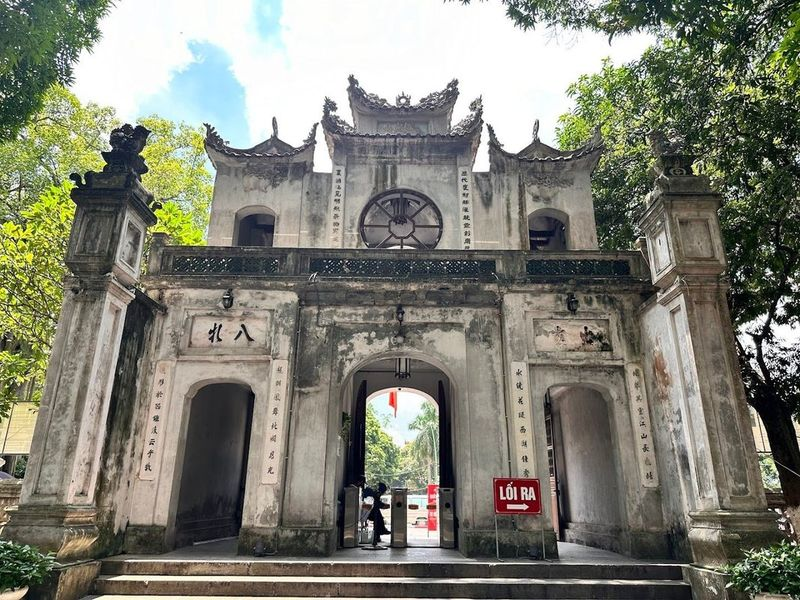
Quan Thanh Temple
Quan Thanh Temple, a Taoist temple dating back to the 1200s, is a revered site in Hanoi. It is one of the four ancient temples believed to ward off evil spirits and protect the city. The temple features a spacious courtyard and houses a revered bronze statue. Despite being surrounded by busy streets today, it was once a peaceful place of worship overlooking West Lake.
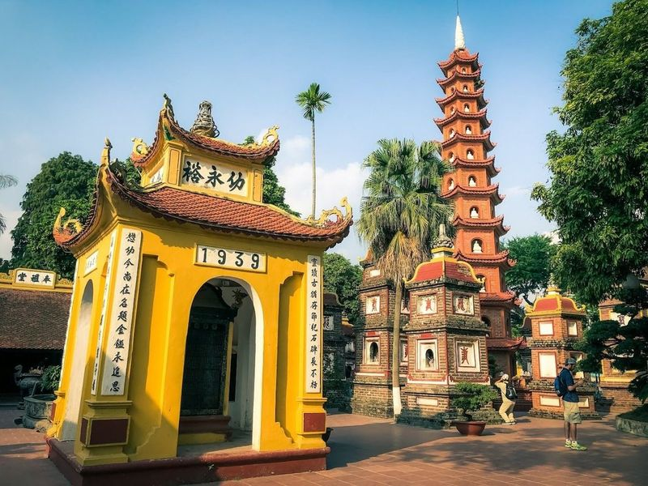
Tran Quoc Pagoda
Tran Quoc Pagoda is a serene and picturesque Buddhist temple located on a small island in the West Lake of Hanoi. It is the oldest temple in the city, dating back to the 6th century. The pagoda features a seven-story tower and various shrines with intricate statues and carvings that signify different stages in Buddha's life. Originally built on the bank of the Red River, it was later relocated to its current location due to river encroachment.
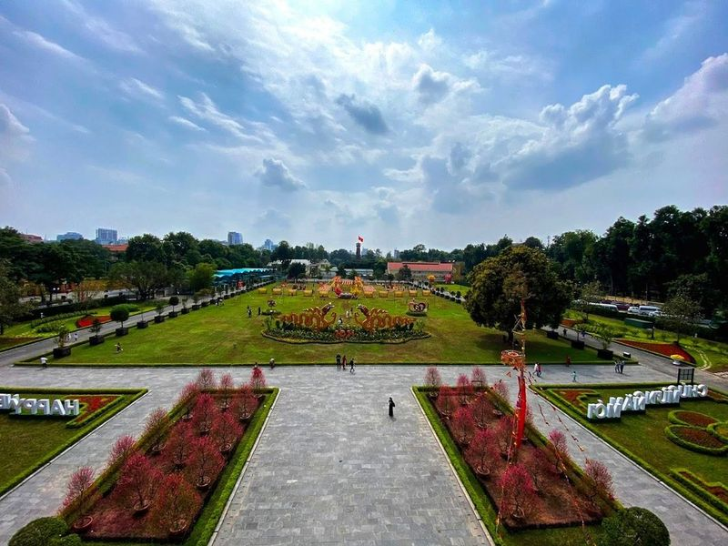
Imperial Citadel of Thang Long
The Imperial Citadel of Thang Long is a remarkable historical site that showcases the rich heritage of Vietnam, dating back to the 11th century. This UNESCO World Heritage Site served as the political and cultural heart of Vietnam for over 13 centuries. Visitors can wander through its impressive structures, including the Flag Tower and Doan Mon Gate, while also discovering remnants from various dynasties that shaped Vietnamese history.
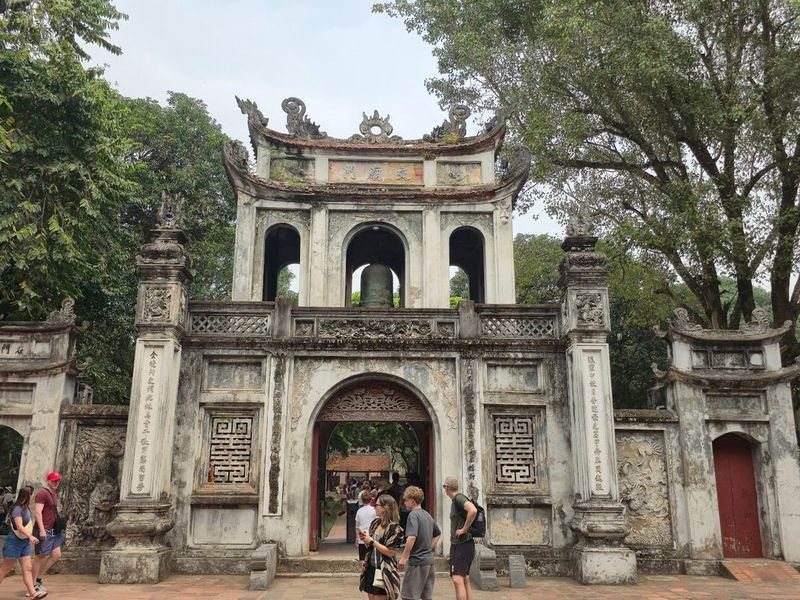
Temple Of Literature
The Temple of Literature in Hanoi is a significant cultural and educational site, often considered one of the city's most appealing historical attractions. It comprises two architectural complexes: Van Mieu, a Confucian temple dedicated to revered figures, and Quoc Tu Giam, Vietnam's first university. Surrounded by stone walls and old trees, the temple exudes a peaceful atmosphere despite its location on a bustling street.
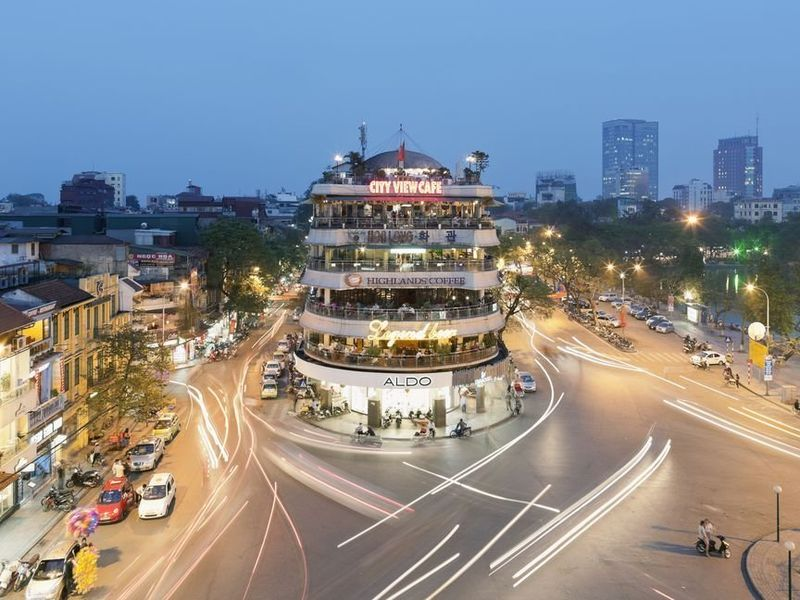
Hanoi Old Quarter
Hanoi Old Quarter is a historic trading district with narrow lanes, a night market, and traditional tube houses. The Hanoi Old Quarter Cultural Centre offers interactive displays and exhibitions showcasing the city's evolution from a small trading port in 1010AD. Nearby Hoan Kiem Lake provides a peaceful escape with Ngoc Son Temple on its northern edge. Residents practice tai chi by the lake in the mornings, and on weekends, there's a funfair vibe due to traffic bans.
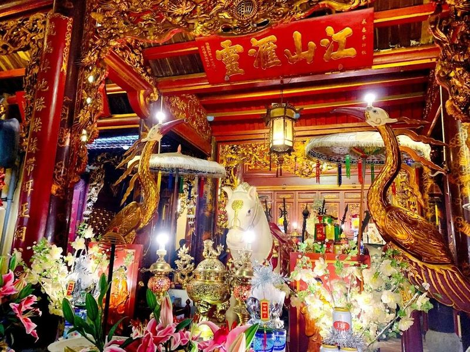
Bach Ma Temple
Bach Ma Temple, In Hanoi's Old Quarter, is an ancient temple with a rich history. Originally founded in 1010 during the Ly dynasty, it was reconstructed in the 18th and 19th centuries. The temple is known for its unassuming exterior that belies the historical treasures within. Upon entering, visitors are greeted by a statue of a white horse, symbolizing the legendary creature that guided Emperor Ly Thai To to this sacred site.
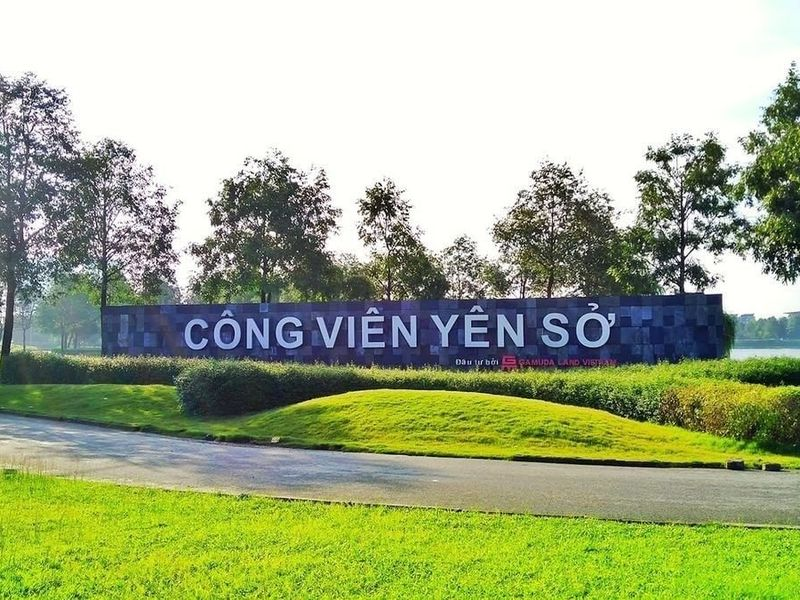
Yen So Park
Cua Bac Parish Church, also known as the Church of Martyrs, is a Roman Catholic church located in Hanoi. Built between 1925 and 1932 by French architect Ernest Hebrard, it features a unique blend of Asian and European architectural styles. The church's asymmetrical design sets it apart from other churches of its time, with a high bell tower on one side and a dome in the center. Its yellow facade and simply appointed interior add to its charm.
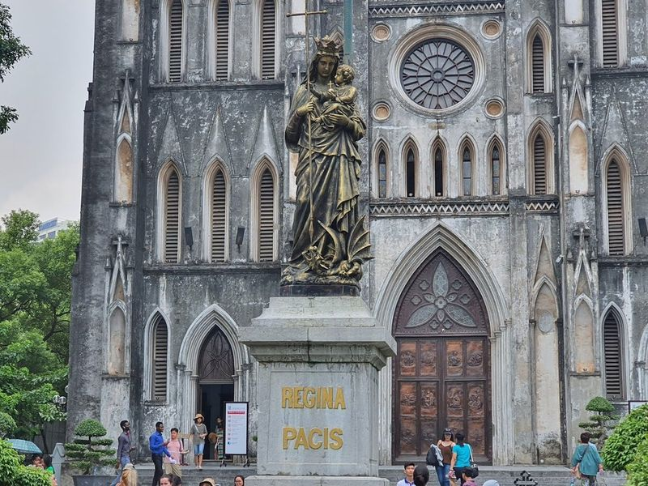
Nhà Thờ Lớn Hà Nội
St. Joseph Cathedral, also known as Nha Tho Lon or The Big Church, is a Roman Catholic neo-gothic style cathedral In Hanoi near Hoan Kiem Lake. Constructed around 120 years ago, it is the oldest church hosting religious activities for Hanois parishioners. Its design bears resemblance to the architecture of Paris' Notre Dame Cathedral. Just steps away from this landmark lies T.U.N.
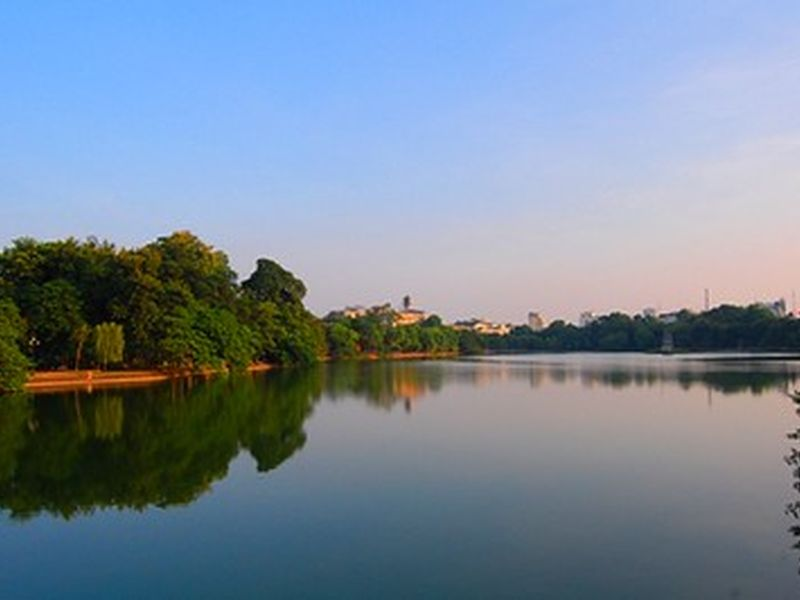
Hoan Kiem Lake
Hoan Kiem Lake is listed among principal sites for Hanoi within Vietnam. Municipal and regional heritage listings document its place in the historic centre and travellers routes through Hanoi. Hoan Kiem Lake is listed among principal sites for Hanoi within Vietnam.
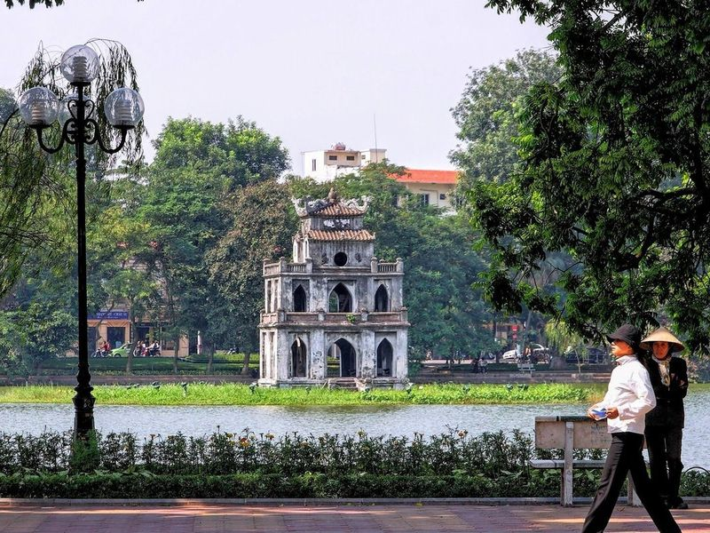
Hoàn Kiếm Lake
Hoàn Kiếm Lake in Hanoi is steeped in legend and history. It's associated with the tale of Emperor Le Loi, who returned a magical sword to a Golden Turtle God after defeating invaders. The lake is home to the ancient Great-Grandfather Turtle and features remarkable architectural landmarks like the hundred-year-old Turtle Tower, Ngoc Son temple, and the red The Huc bridge.
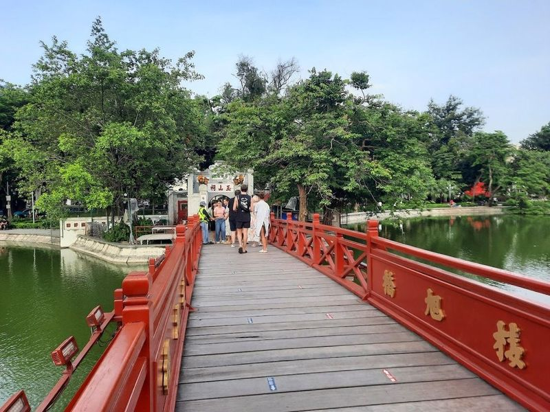
Ngoc Son Temple
Ngoc Son Temple is a serene 18th-century pagoda located on a small island in the middle of Hoan Kiem Lake, also known as Sword Lake. Accessible by an ornate wooden bridge, the temple is dedicated to national hero Tran Hung Dao and houses altars and ancient artifacts, including ceramics. The lake itself was once home to giant turtles, considered mythical creatures akin to the legend of Excalibur.
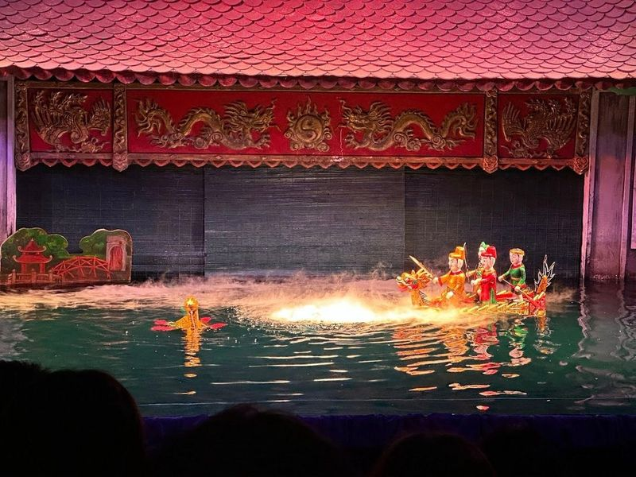
Thang Long Water Puppet Theatre
The Thang Long Water Puppet Theatre in Hanoi offers a unique and traditional Vietnamese art form known as water puppetry. The performances showcase classic Vietnamese folklore and legends, accompanied by live traditional music played on instruments like wooden bells, drums, horns, bamboo flutes, and cymbals.
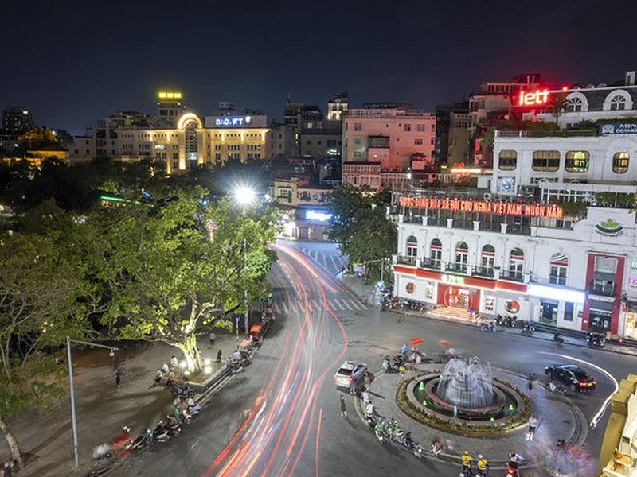
Dong Kinh Nghia Thuc Square
Dong Kinh Nghia Thuc Square is listed among principal sites for Hanoi within Vietnam. Municipal and regional heritage listings document its place in the historic centre and travellers routes through Hanoi. Dong Kinh Nghia Thuc Square is listed among principal sites for Hanoi within Vietnam.
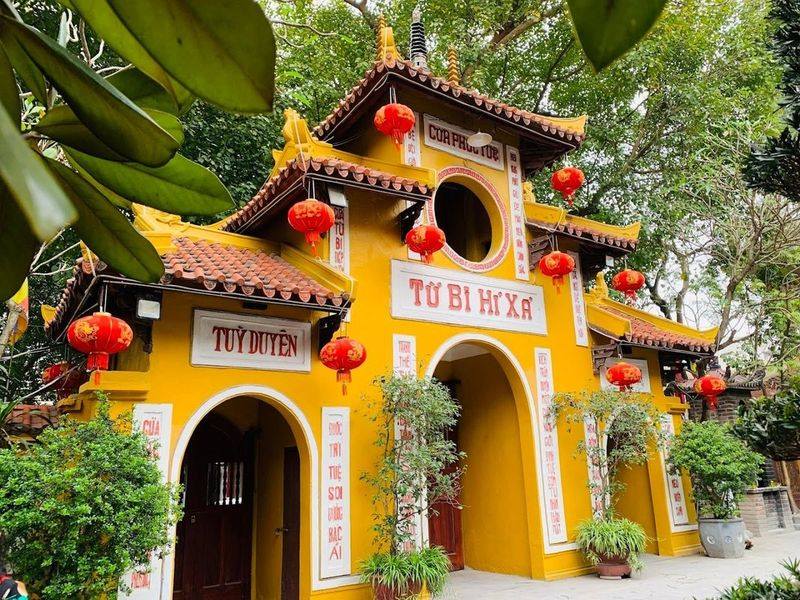
Chùa Quán Sứ
The Buddhist temple Chùa Quán Sứ (transliterated Quan Su) is popularly known as the Ambassador's Pagoda. It was built in 15th century during the reign of Le Dynasty to receive Buddhist ambassadors and is lesser known to tourists yet. The temple features a large number of Buddha images, including a statue of the Triple Gem Buddha which is said to be over one hundred years old.
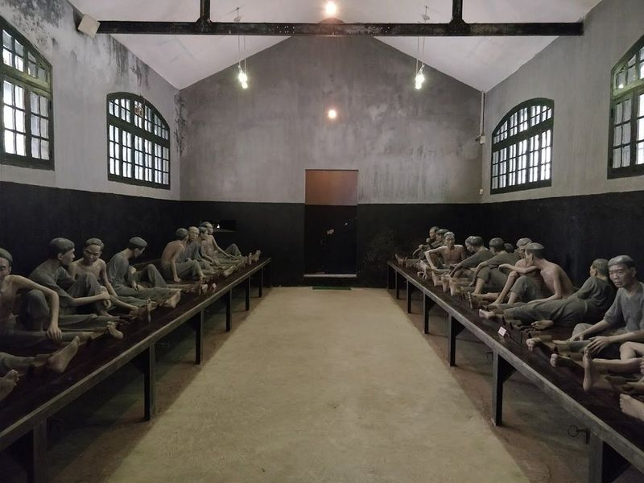
Hoa Lo Prison Relic
Hoa Lo Prison, often referred to as the Hanoi Hilton, stands as a poignant reminder of Vietnam's tumultuous past. This historic site primarily served as a detention center for American POWs during the Vietnam War, including notable figures like Senator John McCain. Today, only the gatehouse remains and has been transformed into a museum that offers insights into its storied history.
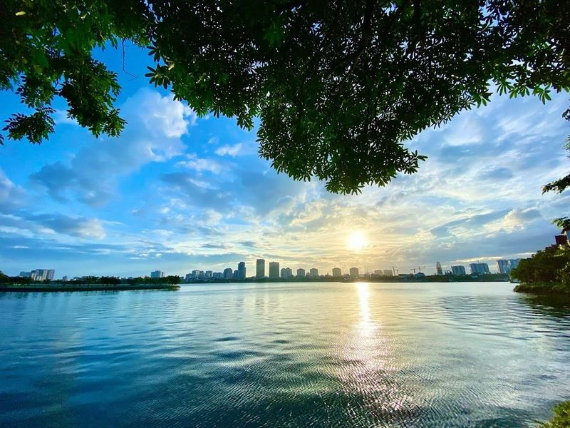
West Lake
West Lake, also known as Ho Tay, is an urban freshwater lake with an 11-mile perimeter and a 6th-century pagoda in the middle. It's a popular spot for cycling, with bike rentals available for solo exploration around its 15km circumference. Along the way, visitors can stop at various cafes and restaurants offering unique experiences such as war bunker Block House cafe and coffee den Duy Tri.
Thung lũng hoa hồ Tây
Thung lũng hoa hồ Tây is listed among principal sites for Hanoi within Vietnam. Municipal and regional heritage listings document its place in the historic centre and travellers routes through Hanoi. Thung lũng hoa hồ Tây is listed among principal sites for Hanoi within Vietnam.
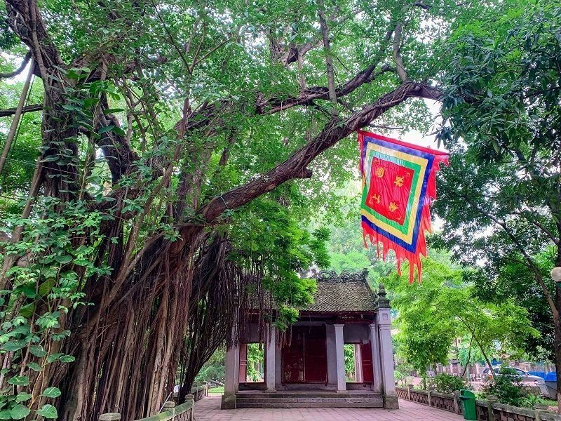
Voi Phuc Temple
Nestled near the bustling Hanoi Zoo, Voi Phuc Temple, also known as the Kneeling Elephants Temple, is a captivating historical site dedicated to Prince Linh Lang. This ancient temple, constructed by Ly Thai Tong over 950 years ago, marks the legendary spot where a mighty elephant knelt for the prince to mount and head into battle. As one of Thang Long's Four Sacred Temples, it boasts an impressive and majestic appearance that draws visitors seeking both history and tranquility.
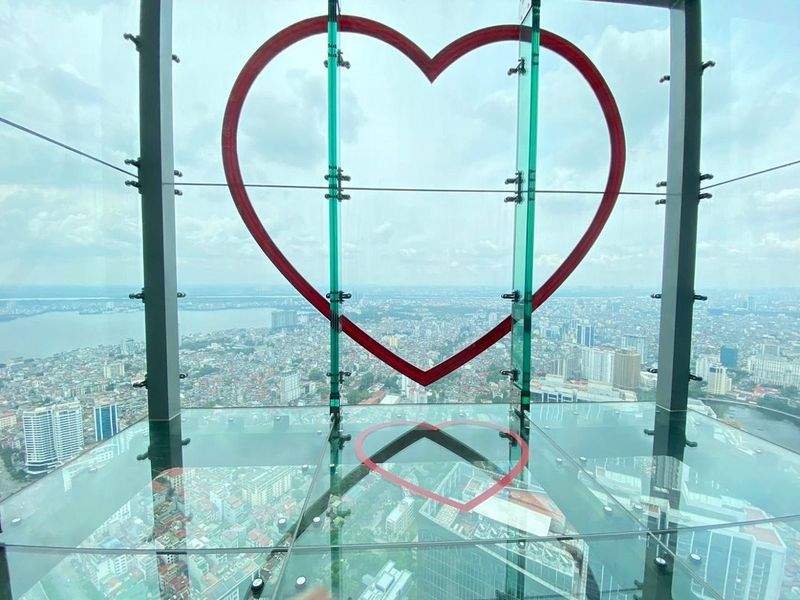
Sky Lotte Observation Deck
Located on the 65th floor of a modern skyscraper, Sky Lotte Observation Deck offers visitors a unique experience with its glass floor and various seating areas. Divided into four distinct zones - Attraction, Welcome, Experience, and Love Story - the deck showcases different aspects of Hanoi culture and provides 360-degree views of the city.